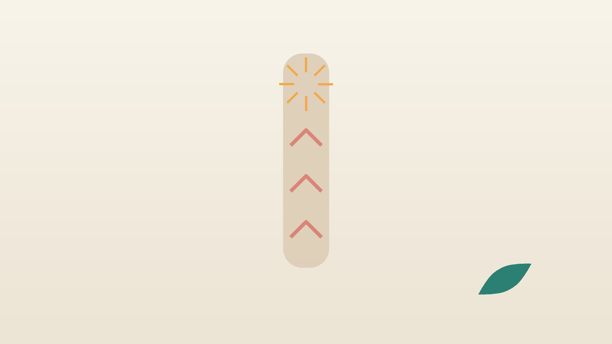

건강 칼럼 · 코·목·눈·입 · 인천 역류성 후두염 한의원
목이 칼칼하고 헛기침이 잦다면, 역류성 후두염 한방 관리

나의 목 증상, 이런 모습인가요?
- 하루에도 수십 번 '흠흠' 하고 목을 가다듬는다
- 목에 끈끈한 가래가 붙어 있는데 뱉어도 잘 나오지 않는다
- 아침에 일어나면 목소리가 갈라지고 오후가 되면 조금 나아진다
- 밥을 먹은 뒤나 누우면 마른기침이 난다
- 가슴이 타는 느낌은 없는데 입 안이 쓰거나 신맛이 돈다
- 야식이나 술 마신 다음 날 목이 유난히 칼칼하다
이 체크리스트는 진단 도구가 아닙니다. 목 증상이 몇 주 넘게 이어지면 이비인후과에서 후두를 직접 보는 검사를 받으세요.
이비인후과 진료가 먼저 필요한 신호
- 쉰 목소리가 2~3주 넘게 나아지지 않는다. 담배를 피우거나 피웠던 분은 더 서두르세요
- 음식이나 침을 삼키기 어렵거나 삼킬 때 아프다
- 특별한 이유 없이 체중이 줄었다
- 가래에 피가 섞여 나온다
- 목에 만져지는 멍울이 있거나 한쪽 귀가 계속 아프다
이런 경우에는 역류보다 후두나 인두의 종양, 성대 질환을 먼저 확인해야 합니다. 숨 쉴 때 목에서 쌕쌕 소리가 나고 숨이 막힐 듯하면 즉시 119를 부르세요.
위산이 왜 목까지 올라오나요?
식도 위아래 끝에는 문처럼 닫혀 있는 조임근이 있습니다. 위쪽 문까지 넘어선 적은 양의 역류에도 후두 점막은 식도보다 훨씬 약해 쉽게 붓고 예민해집니다. 위산뿐 아니라 함께 올라오는 소화 효소가 점막을 자극한다는 설명도 있습니다.
- 밤보다 낮: 전형적인 역류성 식도염은 누웠을 때 심해지지만, 인후두 역류는 낮에 서 있거나 말할 때 조금씩 올라오는 경우가 많다고 알려져 있습니다.
- 목을 쓰는 습관: 헛기침을 자주 하면 성대끼리 세게 부딪혀 붓기가 더해집니다.
- 생활 요인: 늦은 저녁, 과식, 술, 커피, 탄산음료, 흡연, 복부 비만이 역류를 늘립니다.
병원에서는 후두내시경으로 성대 뒤쪽이 붓고 붉은지, 다른 병변은 없는지 봅니다. 증상 점수표로 정도를 매기고, 필요하면 24시간 산도·임피던스 검사를 하거나 위산 억제제를 일정 기간 써 보며 반응을 확인하기도 합니다.
한의학은 역류성 후두염을 어떻게 보나요?
한의학에서는 목이 막히고 아프며 불편한 병을 후비(喉痺)로, 신물이 올라오는 것을 탄산(呑酸)으로 불렀습니다. 음식이 내려가야 할 위의 기운이 거꾸로 치밀어 오르는 것을 '위기상역(胃氣上逆)'이라 하여, 목 증상의 뿌리를 위에서 찾았습니다.
장중경의 『금궤요략』에는 기운이 크게 치밀고 목구멍이 편치 않을 때 기운을 내리는 맥문동탕(麥門冬湯)이 나옵니다. 목의 진액이 마르고 열이 떠오른 상태와, 위장에 습열이 쌓여 위로 넘치는 상태를 구분해 치료 방향을 정합니다.
나는 어떤 유형일까?
이비인후과에서 다른 질환이 배제된 뒤 쓰는 한의학적 구분입니다.
1. 간위불화(肝胃不和) 신경 쓰면 올라오는 유형
- 이런 분에게 많아요
- 긴장하는 일이 많고 식사 시간이 불규칙한 분
- 나타나는 모습
- 신경을 쓰면 목이 조이고 신물과 트림이 올라온다
- 함께 오는 몸의 신호
- 옆구리 답답함, 한숨, 입이 씀
- 진찰에서 보이는 모습
- 혀 가장자리가 붉고 맥이 팽팽함
- 치료 방향
- 뭉친 기운을 풀고 위의 기운을 내리는 방향 (좌금환·시호소간산 계열)
- 오늘부터 해 볼 것
- 식사 중에는 업무 메시지를 보지 말고 천천히 씹어 드세요.
2. 담습(痰濕) 가래가 붙는 유형
- 이런 분에게 많아요
- 기름진 음식·야식이 잦고 체중이 늘어난 분
- 나타나는 모습
- 목에 끈끈한 가래가 늘 붙어 있고 식후 더부룩하다
- 함께 오는 몸의 신호
- 몸이 무거움, 입안 텁텁함
- 진찰에서 보이는 모습
- 혀가 두툼하고 백태가 끈끈함
- 치료 방향
- 고인 담을 삭이고 막힌 기운을 뚫는 방향 (반하후박탕 계열)
- 오늘부터 해 볼 것
- 저녁은 잠들기 3시간 전까지 마치고 양을 줄여 보세요.
3. 위음허(胃陰虛) 마르고 칼칼한 유형
- 이런 분에게 많아요
- 말을 많이 하는 직업이거나 갱년기 무렵인 분
- 나타나는 모습
- 목이 마르고 칼칼하며 마른기침이 나고 목소리가 쉽게 갈라진다
- 함께 오는 몸의 신호
- 입마름, 손발 화끈거림, 변이 단단함
- 진찰에서 보이는 모습
- 혀가 붉고 이끼가 적음
- 치료 방향
- 목과 위의 진액을 채워 열을 내리는 방향 (맥문동탕 계열)
- 오늘부터 해 볼 것
- 미지근한 물을 한 모금씩 자주 마셔 목을 적셔 주세요.
한의원에서는 어떻게 진찰하나요?
- 검사 결과 확인: 후두내시경 결과를 확인하고, 아직 받지 않았다면 이비인후과 진료를 먼저 안내합니다.
- 증상과 생활 기록: 언제 목이 불편한지, 저녁 식사 시각과 잠드는 시각, 술·커피·흡연 여부를 여쭙습니다.
- 배와 맥·혀: 명치를 눌러 답답함과 단단함을 보고, 맥과 혀로 유형을 나눕니다.
- 복용 약: 위산 억제제나 다른 약을 드신다면 알려 주시면 확인해 처방합니다.
침·약침·한약 치료는 어떻게 하나요?
1. 침 치료
- 중완(中脘): 배꼽에서 명치 끝 방향으로 딱 절반 올라간 자리로, 위가 음식을 아래로 내려보내도록 돕습니다.
- 내관(內關): 손목 안쪽 가로 주름에서 팔꿈치 쪽으로 손가락 세 개 너비, 두 힘줄 사이입니다. 위로 거슬러 오르는 위의 기운을 가라앉힐 때 씁니다.
- 공손(公孫): 엄지발가락 쪽 발 안쪽에서 첫째 발허리뼈 아래 앞쪽 오목한 곳입니다.
- 렴천(廉泉): 목 앞 한가운데, 목젖 위쪽 오목한 자리로, 목의 불편감에 얕게 놓습니다.
2. 약침
헛기침과 긴장으로 굳은 목 앞뒤 근육, 명치 주변 혈자리에 약침을 시행해 목과 위장의 긴장을 풉니다. 임신 중이라면 주수를 확인한 뒤 피해야 할 부위를 빼고 시행합니다.
3. 한약
유형에 따라 탕약 위주로 처방하며, 식사 습관이 함께 바뀌어야 효과를 기대할 수 있어 생활 기록을 보며 약을 조절합니다. 병원에서 처방받은 위산 억제제는 임의로 끊지 말고, 줄이는 시점은 처방한 의사와 정하세요. 임신 중이거나 위궤양 병력이 있다면 진료 때 꼭 알려 주세요. 확인 후 안전한 약재로 처방합니다. 한약은 원장이 원내 탕전실에서 약재 선별부터 달이는 과정까지 직접 관리하며, 10일분씩 처방해 복용 경과를 보고 약재 구성과 양을 조절합니다.

치료는 어떤 순서로 진행되나요?
- 이비인후과 확인 후두내시경으로 종양 등 다른 원인을 배제합니다.
- 첫 한방 진료 식사·수면 기록과 체질로 유형을 나눕니다.
- 4~8주 침·약침과 한약을 하며 저녁 식사 시각과 베개 높이를 바꿉니다.
- 유지 목 증상 점수가 내려가면 치료 간격을 넓히고 습관을 이어 갑니다.
후두 점막이 가라앉는 데는 몇 주에서 몇 달이 걸릴 수 있으며, 진찰 후 개인별로 안내합니다.
목을 편하게 하는 식사·수면 습관
- 잠들기 3시간 전 금식: 저녁은 일찍, 가볍게 드시고 야식은 피하세요.
- 상체 높이기: 베개만 높이면 배가 접혀 오히려 압력이 늘 수 있으니, 침대 머리 쪽 다리를 10~15cm 정도 올리거나 쐐기형 베개를 쓰세요. 왼쪽으로 눕는 것도 도움이 된다는 보고가 있습니다.
- 헛기침 대신 삼키기: 목을 가다듬고 싶을 때 물을 한 모금 삼키거나 침을 꿀꺽 넘겨 보세요.
- 줄일 것: 술, 커피, 탄산음료, 초콜릿, 박하, 기름진 튀김을 줄이고 담배는 끊으세요.
- 허리띠 느슨하게: 배를 조이는 옷과 식후 바로 허리를 숙이는 자세를 피하세요.
다른 진료가 함께 필요한 경우
- 가슴쓰림과 신물이 함께 심하면 소화기내과에서 위내시경을 받아 보세요.
- 기침이 8주 넘게 이어지면 천식이나 후비루 같은 다른 원인을 호흡기내과·이비인후과에서 확인하세요.
- 목소리를 많이 쓰는 직업이라면 음성 치료를 함께 받는 것이 도움이 됩니다.
- 불안이나 긴장으로 목 조임이 심하면 증상이 가벼운 경우 한약 치료를 중심으로 관리하기도 하며, 깊다면 정신건강의학과 치료를 함께 받으세요.
자주 묻는 질문 Q&A
- Q1. 속쓰림이 없는데 역류일 수 있나요?
- 네, 인후두 역류는 가슴쓰림 없이 목 증상만 있는 경우가 흔합니다.
- Q2. 목에 걸린 느낌만 있어도 내시경을 받아야 하나요?
- 한 번은 후두를 직접 보고 다른 원인이 없는지 확인하는 것이 좋습니다.
- Q3. 위산 억제제를 먹어도 목이 안 나아요.
- 목 점막은 회복이 느리고 생활 습관 영향도 커서, 식사 시각과 잠자리 자세를 함께 바꿔 보세요.
- Q4. 물을 많이 마시면 도움이 되나요?
- 한꺼번에 많이 마시기보다 조금씩 자주 마셔 목을 적시는 편이 낫습니다.
- Q5. 껌을 씹으면 좋나요?
- 박하 껌은 피하시고, 식후 무가당 껌은 침 분비를 늘려 도움이 된다는 보고가 있습니다.
- Q6. 담배를 피우는데 쉰 목소리가 한 달째예요.
- 역류로 단정하지 말고 바로 이비인후과에서 후두내시경을 받으세요.
- Q7. 어린이도 생기나요?
- 생길 수 있으며, 소아는 약침 없이 스티커침과 쓴맛이 덜한 한약으로 진료합니다.
- Q8. 목이 답답할 때 눌러 볼 곳이 있나요?
- 손목의 내관혈을 지그시 1~2분 눌러 보세요. 숨쉬기 힘들면 바로 119를 부르세요.
문원열 대표원장한의사 · 365스마일한의원
임상 경력 15년, 인천 서구 가정동에서 개원 후 10년째 진료하고 있으며, FCST 턱관절학회·연부조직학회·침도학회 등에서 활동합니다. 아픈 곳만이 아니라 증상의 원인을 찾아 진료합니다.
진료 안내
- 진료시간
- 평일 09:00~20:00 (점심시간 13:00~14:00, 접수 마감 19:30)
토·일·공휴일 09:00~15:00 (접수 마감 14:30) - 주소
- 인천광역시 서구 가경주로 46, 2층 (가정동)
인천2호선 가정중앙시장역 인근
영상으로 길 안내 보기 → - 주차
- 한의원 건물 바로 앞 1층 도원주차장, 또는 도보 5분 거리 가정주차장
- 예약
- 예약 바로가기 또는 전화 예약
진료시간은 사정에 따라 바뀔 수 있으니 방문 전 전화로 확인해 주세요.
함께 읽으면 좋은 칼럼
건강 칼럼 전체 보기 →


참고 자료
- Belafsky PC, Postma GN, Koufman JA. Validity and reliability of the reflux symptom index (RSI). J Voice, 2002
- Stachler RJ, et al. Clinical Practice Guideline: Hoarseness (Dysphonia) (Update). Otolaryngol Head Neck Surg, 2018
- 장중경, 『금궤요략(金匱要略)』 폐위폐옹해수상기병맥증치(肺痿肺癰咳嗽上氣病脈證治)
- 질병관리청 국가건강정보포털 — 원문
※ 이 글은 일반적인 건강 정보이며, 개인의 상태에 따라 치료 방법과 결과는 다를 수 있습니다. 정확한 진단과 치료는 진료를 통해 결정됩니다. 침·약침 시술 후 드물게 멍, 통증 등이 생길 수 있습니다.